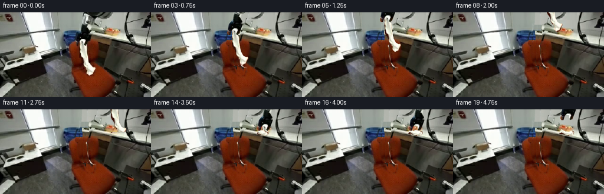
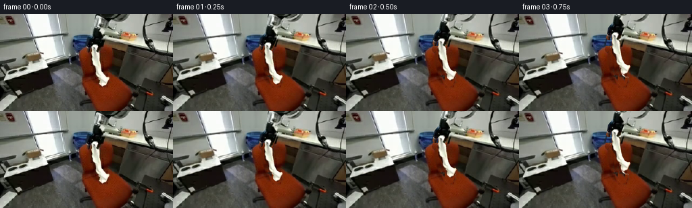
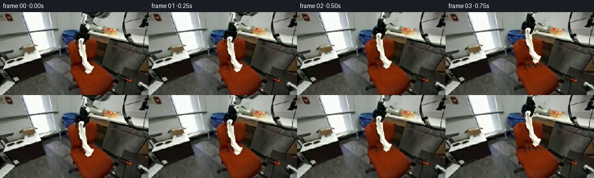
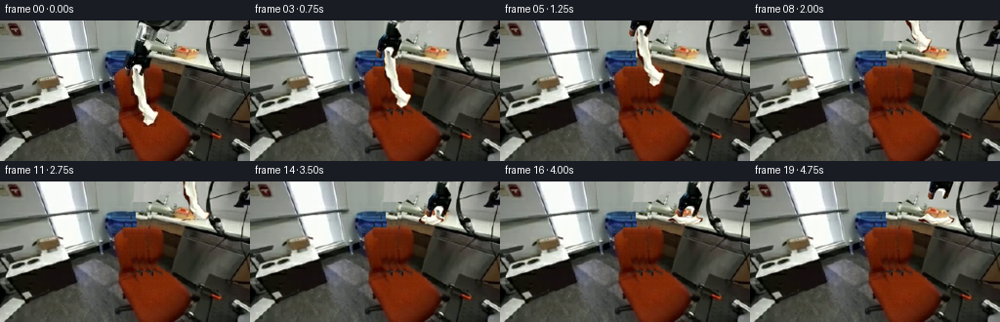
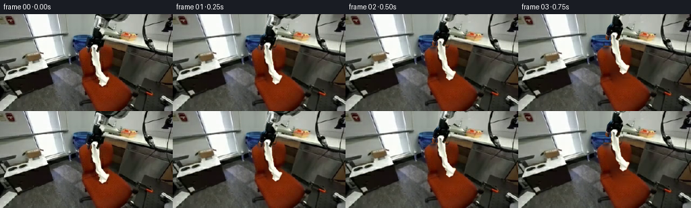
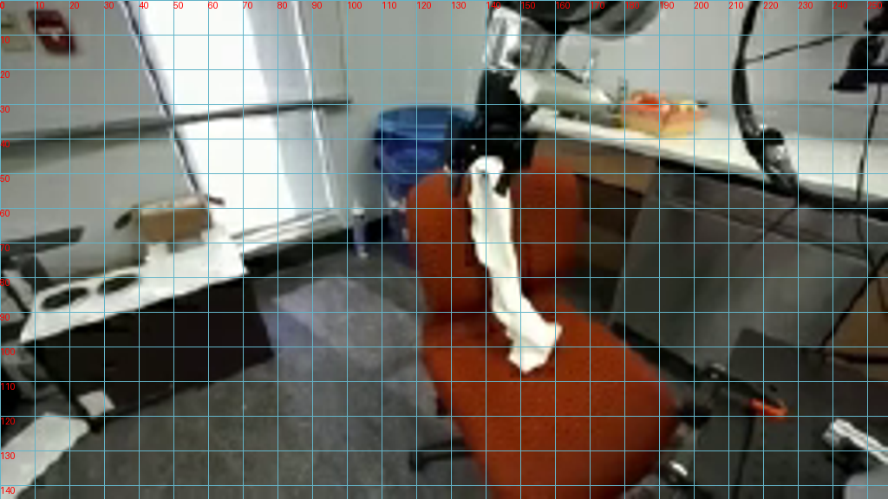
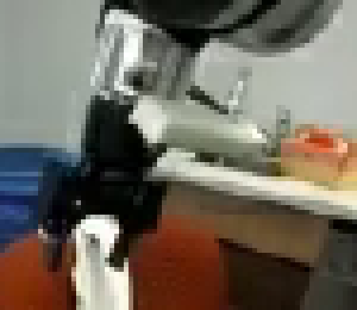
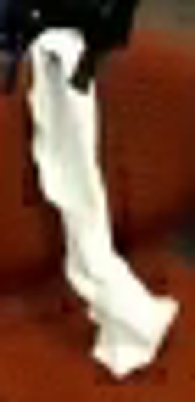
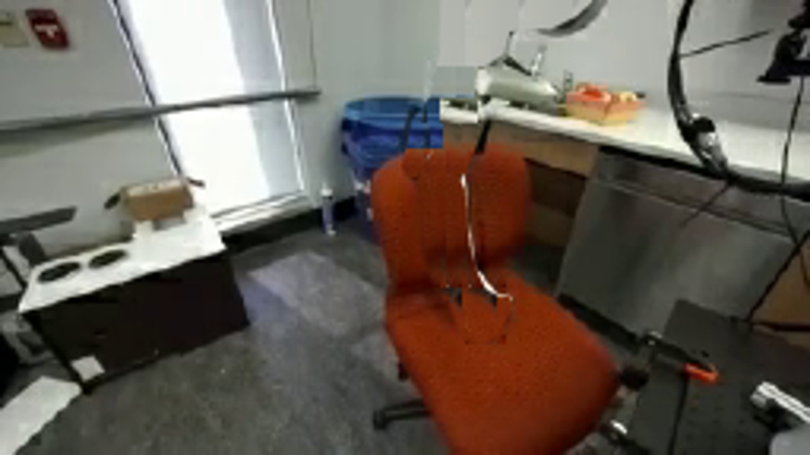
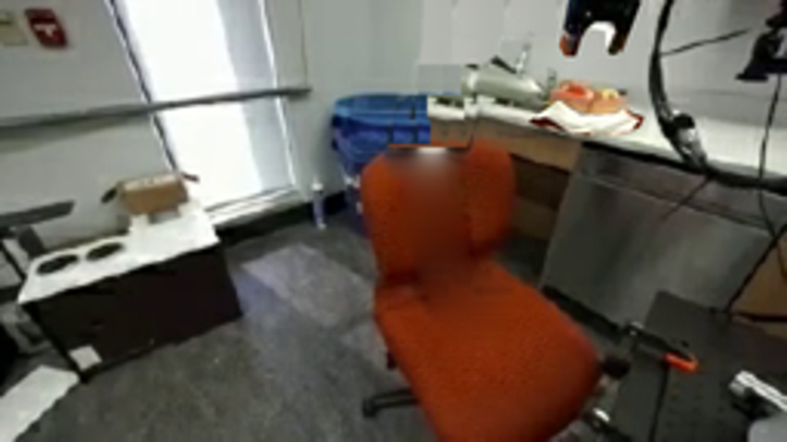

CODING AGENTS AS PIXEL WORLD MODELS
traex/GPT-6.1-Sol · common50_0011
点击播放 · 原生 RGB 像素
逐轮保存的候选
回放视频、检查图与代码变化。
每份候选均可单独播放。实际图片检查记录在下方工具轨迹中。
候选 01播放与检查图
点击播放 · 原生 RGB 像素


展开代码变化
--- 上一保存版本
+++ 本次保存版本
@@ -0,0 +1,161 @@
+from pathlib import Path
+import numpy as np
+from PIL import Image, ImageDraw, ImageFilter
+import artifact_io
+
+ROOT=Path(__file__).resolve().parent
+S=3
+im=Image.open(ROOT/'first_frame.png').convert('RGB')
+a=np.asarray(im).copy(); H,W=a.shape[:2]
+
+def poly_mask(points,blur=0):
+ m=Image.new('L',(W*S,H*S)); ImageDraw.Draw(m).polygon([(round(x*S),round(y*S)) for x,y in points],fill=255)
+ if blur: m=m.filter(ImageFilter.GaussianBlur(blur*S))
+ return m
+
+arm_poly=[(139.5,0),(187.5,0),(182,5),(174,9),(161,10),(159,17),(151,22),(150,28),(153,34),(153,39),(150,47),(147,55),(143,56),(142,52),(142,48),(137,47),(134,50),(132,56),(128.5,56),(127,53),(128.5,45),(130,38),(135,32),(137.5,25),(139,15)]
+cloth_poly=[(138,45.5),(143.5,46),(146,49),(144,54),(146.5,60),(148,74),(148.5,79),(151,87),(153.5,91.5),(158,94),(160.5,93.5),(162,96),(160,100),(158.5,105),(154,108),(151.5,107.5),(148,104),(147.5,101),(148,98),(145,95),(142,91),(141,85),(139,81),(137,79),(135.5,75),(135.5,67),(134.5,62),(135.5,57),(135,53),(135.8,49)]
+arm_m=poly_mask(arm_poly,.20)
+cloth_m=poly_mask(cloth_poly,.16)
+# Fill only the surfaces hidden by the grasping tool and cloth, from the
+# adjoining wall, bin, and matching chair upholstery in the supplied frame.
+base=a.astype(float).copy()
+arm_small=np.asarray(arm_m.resize((W,H),Image.Resampling.LANCZOS))/255.
+cloth_small=np.asarray(cloth_m.resize((W,H),Image.Resampling.LANCZOS))/255.
+remove=np.maximum(arm_small,cloth_small)
+# Include the cloth's contact shadow, which moves away with the fabric.
+shadow_poly=[(132,50),(138,50),(141,73),(147,88),(154,97),(158,106),(151,110),(145,105),(142,96),(137,90),(134,81),(132.5,72)]
+shadow=np.asarray(poly_mask(shadow_poly,.75).resize((W,H),Image.Resampling.LANCZOS))/255.
+remove=np.maximum(remove,shadow*.95)
+# Color/texture donors are all from the same, fixed camera image.
+for y in range(H):
+ for x in range(W):
+ if remove[y,x]<.001: continue
+ if y<21:
+ # unoccluded pale wall to the right of the arm
+ sx=190+(x-130)%17
+ val=a[y,sx].astype(float)
+ if y<11: val=.7*a[min(y+13,24),sx]+.3*a[y,sx]
+ elif y<31:
+ if x<150:
+ val=a[y,126+(x%8)].astype(float)
+ else:
+ val=a[y,160+(x-150)%10].astype(float)
+ elif y<39:
+ if x<139:
+ val=a[y,121+(x%9)].astype(float)
+ else:
+ val=a[y,158+(x-139)%12].astype(float)
+ elif y<47:
+ if x<140:
+ val=a[y,120+(x%8)].astype(float)
+ else:
+ val=a[y,158+(x-140)%6].astype(float)
+ elif y<91:
+ # chair back: row-preserving samples keep the seat/back seam fixed
+ sx=155+(x-134)%7
+ val=a[y,sx].astype(float)
+ if y>=54:
+ left=a[y,124+(x%4)].astype(float)
+ val=.74*val+.26*left
+ else:
+ sx=167+(x-135)%11
+ val=a[y,sx].astype(float)
+ left=a[y,128+(x%6)].astype(float)
+ val=.82*val+.18*left
+ base[y,x]=base[y,x]*(1-remove[y,x])+val*remove[y,x]
+base=Image.fromarray(np.clip(base,0,255).astype('uint8')).resize((W*S,H*S),Image.Resampling.BICUBIC)
+source=im.resize((W*S,H*S),Image.Resampling.BICUBIC)
+arm=source.convert('RGBA');arm.putalpha(arm_m)
+cloth=source.convert('RGBA');cloth.putalpha(cloth_m)
+cloth_arr=np.asarray(cloth).astype(float)
+
+# Barycentric pixel warping of the cloth strip. The arm itself is transformed
+# rigidly as one photographic part, never stretched or morphed.
+ys=np.array([45,48,52,56,60,64,68,72,76,80,84,88,92,96,100,104,109],float)
+xs=np.array([130,134,138,142,146,150,154,158,162,166],float)
+cy=np.array([45,48,54,62,72,80,86,92,96,101,107,109],float)
+cx=np.array([140,140,139.6,140.4,142,143.5,145.4,148.6,153.2,154.5,153.4,153.4])
+
+def bilinear(arr,x,y):
+ x=np.clip(x,0,arr.shape[1]-1.001); y=np.clip(y,0,arr.shape[0]-1.001)
+ xi=x.astype(int);yi=y.astype(int);fx=(x-xi)[:,None];fy=(y-yi)[:,None]
+ return arr[yi,xi]*(1-fx)*(1-fy)+arr[yi,xi+1]*fx*(1-fy)+arr[yi+1,xi]*(1-fx)*fy+arr[yi+1,xi+1]*fx*fy
+
+def triangle(out,sp,dp):
+ dp=np.array(dp)*S;sp=np.array(sp)*S
+ lo=np.maximum(np.floor(dp.min(0)).astype(int),[0,0]);hi=np.minimum(np.ceil(dp.max(0)).astype(int),[W*S-1,H*S-1])
+ if np.any(lo>hi):return
+ mat=np.stack([dp[1]-dp[0],dp[2]-dp[0]],axis=1)
+ if abs(np.linalg.det(mat))<1e-5:return
+ xx,yy=np.meshgrid(np.arange(lo[0],hi[0]+1),np.arange(lo[1],hi[1]+1)); p=np.stack([xx.ravel(),yy.ravel()],axis=1)
+ uv=(p-dp[0])@np.linalg.inv(mat).T
+ good=(uv[:,0]>=-.001)&(uv[:,1]>=-.001)&(uv.sum(1)<=1.001)
+ p=p[good]; uv=uv[good]
+ if not len(p):return
+ sample=sp[0]+uv[:,0,None]*(sp[1]-sp[0])+uv[:,1,None]*(sp[2]-sp[0])
+ rgba=bilinear(cloth_arr,sample[:,0],sample[:,1])
+ # Overlapping folds are composed in material order.
+ old=out[p[:,1],p[:,0]]
+ al=rgba[:,3:4]/255; ao=old[:,3:4]/255
+ na=al+ao*(1-al)
+ rgb=(rgba[:,:3]*al+old[:,:3]*ao*(1-al))/np.maximum(na,1e-8)
+ out[p[:,1],p[:,0]]=np.concatenate([rgb,na*255],axis=1)
+
+
+def cloth_render(dx,dy,frame,release=0):
+ out=np.zeros((H*S,W*S,4),float)
+ gx=140+dx; gy=48+dy
+ if release:gy=gy+(40-gy)*release
+ contact=(frame>=11)
+ surface=39.8
+ hanging=max(0,surface-gy)
+ def target(x,y):
+ s=y-48; c=np.interp(y,cy,cx); off=x-c
+ if not contact or s<hanging:
+ bend=1.4*np.sin(frame*.45)*(max(s,0)/60)**2
+ return np.array([x+dx+bend,y+dy+(40-(48+dy))*release])
+ q=max(0,s-hanging)
+ # Excess material settles in soft reversing folds on the counter plane.
+ # Each turn follows a planar path rather than stretching the cloth.
+ px=gx-11.5*np.sin(q/13.0)
+ py=surface+.17*(px-gx)+1.0*np.sin(q/5.0)
+ blend=min(q/5,1)
+ vx=1-.75*blend;vy=-.56*blend
+ return np.array([px+off*vx,py+off*vy])
+ dst=np.array([[target(x,y) for x in xs] for y in ys])
+ # Lower material rests over earlier folds; the white photographic folds
+ # provide the fabric's original shading, fiber color, and wrinkled edges.
+ for j in range(len(ys)-1):
+ for k in range(len(xs)-1):
+ a0=[xs[k],ys[j]];b0=[xs[k+1],ys[j]];c0=[xs[k+1],ys[j+1]];d0=[xs[k],ys[j+1]]
+ triangle(out,[a0,b0,c0],[dst[j,k],dst[j,k+1],dst[j+1,k+1]])
+ triangle(out,[a0,c0,d0],[dst[j,k],dst[j+1,k+1],dst[j+1,k]])
+ return Image.fromarray(np.clip(out,0,255).astype('uint8'),'RGBA')
+
+# Lift straight clear of the upholstery, travel above the counter, lower and
+# gather the fabric, release, then withdraw the wrist without moving the chair.
+poses=[(0,0),(0,-3),(1,-9),(2,-18),(3,-28),(5,-40),(8,-55),(13,-68),(24,-75),(37,-75),(49,-71),(53,-62),(53,-48),(53,-33),(53,-20),(53,-13),(54,-20),(55,-30),(55,-36),(55,-38)]
+frames=[a.copy()]
+for i in range(1,20):
+ dx,dy=poses[i]
+ canvas=base.convert('RGBA')
+ rel=0
+ if i>=16: rel=min(1,(i-15)/2)
+ cdx,cdy=(53,-13) if i>=16 else (dx,dy)
+ fab=cloth_render(cdx,cdy,i,rel)
+ # Soft support shadow appears only when material reaches the counter.
+ if i>=11:
+ alpha=fab.getchannel('A')
+ shade=Image.new('RGBA',canvas.size,(35,31,22,0))
+ shifted=Image.new('L',canvas.size);shifted.paste(alpha,(0,S))
+ shifted=shifted.filter(ImageFilter.GaussianBlur(1.0*S))
+ shifted=shifted.point(lambda v:int(v*.22));shade.putalpha(shifted)
+ canvas=Image.alpha_composite(canvas,shade)
+ canvas=Image.alpha_composite(canvas,fab)
+ moved=Image.new('RGBA',canvas.size)
+ moved.paste(arm,(round(dx*S),round(dy*S)))
+ canvas=Image.alpha_composite(canvas,moved)
+ frames.append(np.asarray(canvas.convert('RGB').resize((W,H),Image.Resampling.LANCZOS)))
+artifact_io.save(np.stack(frames).astype('uint8'),ROOT)
+print('Saved 20 RGB frames and video player.')
候选 02播放与检查图
点击播放 · 原生 RGB 像素


展开代码变化
--- 上一保存版本
+++ 本次保存版本
@@ -13,20 +13,30 @@
if blur: m=m.filter(ImageFilter.GaussianBlur(blur*S))
return m
-arm_poly=[(139.5,0),(187.5,0),(182,5),(174,9),(161,10),(159,17),(151,22),(150,28),(153,34),(153,39),(150,47),(147,55),(143,56),(142,52),(142,48),(137,47),(134,50),(132,56),(128.5,56),(127,53),(128.5,45),(130,38),(135,32),(137.5,25),(139,15)]
+arm_poly=[(139.5,0),(193,0),(188,5),(183,8),(177,11),(174,9),(161,10),(159,17),(151,22),(150,28),(153,34),(153,39),(150,47),(147,55),(143,56),(142,52),(142,48),(137,47),(134,50),(132,56),(128.5,56),(127,53),(128.5,45),(130,38),(135,32),(137.5,25),(139,15)]
cloth_poly=[(138,45.5),(143.5,46),(146,49),(144,54),(146.5,60),(148,74),(148.5,79),(151,87),(153.5,91.5),(158,94),(160.5,93.5),(162,96),(160,100),(158.5,105),(154,108),(151.5,107.5),(148,104),(147.5,101),(148,98),(145,95),(142,91),(141,85),(139,81),(137,79),(135.5,75),(135.5,67),(134.5,62),(135.5,57),(135,53),(135.8,49)]
arm_m=poly_mask(arm_poly,.20)
-cloth_m=poly_mask(cloth_poly,.16)
+# Preserve the bright natural edge of the cloth instead of a clipped outline.
+cloth_roi=np.asarray(poly_mask(cloth_poly).filter(ImageFilter.MaxFilter(13)).resize((W,H),Image.Resampling.LANCZOS))>10
+bright=(a.min(2)>118)&((a.max(2).astype(int)-a.min(2).astype(int))<88)
+cseg=Image.fromarray(np.uint8(cloth_roi&bright)*255).resize((W*S,H*S),Image.Resampling.BICUBIC)
+cloth_m=Image.fromarray(np.maximum(np.asarray(poly_mask(cloth_poly,.16)),np.asarray(cseg))).filter(ImageFilter.GaussianBlur(.14*S))
# Fill only the surfaces hidden by the grasping tool and cloth, from the
# adjoining wall, bin, and matching chair upholstery in the supplied frame.
base=a.astype(float).copy()
arm_small=np.asarray(arm_m.resize((W,H),Image.Resampling.LANCZOS))/255.
cloth_small=np.asarray(cloth_m.resize((W,H),Image.Resampling.LANCZOS))/255.
-remove=np.maximum(arm_small,cloth_small)
+# The source has antialiased bright cloth pixels just outside its silhouette.
+# Expand the restoration mask, but retain the original sprite transparency.
+rem_hi=Image.fromarray(np.maximum(np.asarray(arm_m),np.asarray(cloth_m))).filter(ImageFilter.MaxFilter(11)).filter(ImageFilter.GaussianBlur(.38*S))
+remove=np.asarray(rem_hi.resize((W,H),Image.Resampling.LANCZOS))/255.
# Include the cloth's contact shadow, which moves away with the fabric.
shadow_poly=[(132,50),(138,50),(141,73),(147,88),(154,97),(158,106),(151,110),(145,105),(142,96),(137,90),(134,81),(132.5,72)]
shadow=np.asarray(poly_mask(shadow_poly,.75).resize((W,H),Image.Resampling.LANCZOS))/255.
-remove=np.maximum(remove,shadow*.95)
+remove=np.maximum(remove,shadow)
+# Contact-shadow pixels around the cloth bottom must disappear as well.
+contact_cleanup=np.asarray(poly_mask([(137,78),(148,78),(155,89),(166,93),(164,109),(147,112),(140,98)],.65).resize((W,H),Image.Resampling.LANCZOS))/255.
+remove=np.maximum(remove,contact_cleanup)
# Color/texture donors are all from the same, fixed camera image.
for y in range(H):
for x in range(W):
@@ -118,10 +128,10 @@
q=max(0,s-hanging)
# Excess material settles in soft reversing folds on the counter plane.
# Each turn follows a planar path rather than stretching the cloth.
- px=gx-11.5*np.sin(q/13.0)
- py=surface+.17*(px-gx)+1.0*np.sin(q/5.0)
+ px=gx-16.0*np.sin(q/14.0)
+ py=surface+.17*(px-gx)+1.5*np.sin(q/5.0)
blend=min(q/5,1)
- vx=1-.75*blend;vy=-.56*blend
+ vx=1-.25*blend;vy=-.52*blend
return np.array([px+off*vx,py+off*vy])
dst=np.array([[target(x,y) for x in xs] for y in ys])
# Lower material rests over earlier folds; the white photographic folds
候选 03播放与检查图
点击播放 · 原生 RGB 像素

展开代码变化
--- 上一保存版本
+++ 本次保存版本
@@ -63,10 +63,10 @@
val=a[y,158+(x-140)%6].astype(float)
elif y<91:
# chair back: row-preserving samples keep the seat/back seam fixed
- sx=155+(x-134)%7
+ sx=(155+(x-134)%7) if y<80 else (165+(x%4))
val=a[y,sx].astype(float)
if y>=54:
- left=a[y,124+(x%4)].astype(float)
+ left=a[y,124+(x%4)].astype(float) if y<80 else a[y,125+(x%3)].astype(float)
val=.74*val+.26*left
else:
sx=167+(x-135)%11
@@ -74,6 +74,19 @@
left=a[y,128+(x%6)].astype(float)
val=.82*val+.18*left
base[y,x]=base[y,x]*(1-remove[y,x])+val*remove[y,x]
+# Harmonic restoration of the small cloth-hidden chair area. Keeping the
+# photograph as the boundary makes the chair continuous, not patch-like.
+chair_hole=(remove>.02)&(np.indices((H,W))[0]>=48)
+restored=a.astype(float).copy()
+restored[chair_hole]=base[chair_hole]
+for _ in range(220):
+ neighbors=(np.roll(restored,1,0)+np.roll(restored,-1,0)+np.roll(restored,1,1)+np.roll(restored,-1,1))/4
+ restored[chair_hole]=neighbors[chair_hole]
+# A touch of original orange upholstery grain avoids a smooth painted patch.
+texture=a.astype(float)-np.asarray(im.filter(ImageFilter.GaussianBlur(1.3))).astype(float)
+for y,x in zip(*np.where(chair_hole)):
+ tex=texture[y,min(176,max(166,x+22))]
+ base[y,x]=.93*restored[y,x]+.07*base[y,x]+.3*tex
base=Image.fromarray(np.clip(base,0,255).astype('uint8')).resize((W*S,H*S),Image.Resampling.BICUBIC)
source=im.resize((W*S,H*S),Image.Resampling.BICUBIC)
arm=source.convert('RGBA');arm.putalpha(arm_m)
@@ -141,7 +154,7 @@
a0=[xs[k],ys[j]];b0=[xs[k+1],ys[j]];c0=[xs[k+1],ys[j+1]];d0=[xs[k],ys[j+1]]
triangle(out,[a0,b0,c0],[dst[j,k],dst[j,k+1],dst[j+1,k+1]])
triangle(out,[a0,c0,d0],[dst[j,k],dst[j+1,k+1],dst[j+1,k]])
- return Image.fromarray(np.clip(out,0,255).astype('uint8'),'RGBA')
+ return Image.fromarray(np.clip(out,0,255).astype('uint8'))
# Lift straight clear of the upholstery, travel above the counter, lower and
# gather the fabric, release, then withdraw the wrist without moving the chair.
候选 04播放与检查图
候选 05播放与检查图
点击播放 · 原生 RGB 像素


展开代码变化
--- 上一保存版本
+++ 本次保存版本
@@ -77,7 +77,7 @@
# Harmonic restoration of the small cloth-hidden chair area. Keeping the
# photograph as the boundary makes the chair continuous, not patch-like.
chair_hole=(remove>.02)&(np.indices((H,W))[0]>=48)
-restored=a.astype(float).copy()
+restored=base.astype(float).copy()
restored[chair_hole]=base[chair_hole]
for _ in range(220):
neighbors=(np.roll(restored,1,0)+np.roll(restored,-1,0)+np.roll(restored,1,1)+np.roll(restored,-1,1))/4
@@ -92,6 +92,10 @@
arm=source.convert('RGBA');arm.putalpha(arm_m)
cloth=source.convert('RGBA');cloth.putalpha(cloth_m)
cloth_arr=np.asarray(cloth).astype(float)
+# Remove any orange background feathered into the fabric cutout.
+blue=cloth_arr[:,:,2]
+cloth_arr[:,:,3]*=np.clip((blue-48)/58,0,1)
+
# Barycentric pixel warping of the cloth strip. The arm itself is transformed
# rigidly as one photographic part, never stretched or morphed.
候选 06播放与检查图
可观测工具轨迹
实际执行的命令与返回图片。
命令 1exit 0
/bin/bash -lc "ls -la && cat prompt.txt && printf '\\n--- RULES ---\\n' && cat GENERATION_RULES.md"
命令 2exit 0
/bin/bash -lc "cat task_spec.json && cat artifact_io.py && python - <<'PY'
from PIL import Image
im=Image.open('first_frame.png'); print(im.size); im.resize((1024,576)).save('.tmp/enlarged.png')
PY"命令 3exit 0
/bin/bash -lc "python - <<'PY'
from PIL import Image,ImageDraw
im=Image.open('first_frame.png').resize((1024,576))
d=ImageDraw.Draw(im)
for x in range(0,256,10):
d.line((x*4,0,x*4,576),fill=(100,180,200),width=1); d.text((x*4,0),str(x),fill='red')
for y in range(0,144,10):
d.line((0,y*4,1024,y*4),fill=(100,180,200),width=1);d.text((0,y*4),str(y),fill='red')
im.save('.tmp/grid.png')
PY"命令 4exit 0
/bin/bash -lc "python - <<'PY'
from PIL import Image
im=Image.open('first_frame.png');im.crop((120,0,195,65)).resize((600,520),Image.Resampling.NEAREST).save('.tmp/arm.png')
PY"命令 5exit 0
/bin/bash -lc "python - <<'PY'
from PIL import Image
im=Image.open('first_frame.png'); im.crop((130,40,165,112)).resize((280,576)).save('.tmp/cloth.png')
PY"命令 6exit 0
/bin/bash -lc "cat > generate.py <<'PY'
from pathlib import Path
import numpy as np
from PIL import Image, ImageDraw, ImageFilter
import artifact_io
ROOT=Path(__file__).resolve().parent
S=3
im=Image.open(ROOT/'first_frame.png').convert('RGB')
a=np.asarray(im).copy(); H,W=a.shape[:2]
def poly_mask(points,blur=0):
m=Image.new('L',(W*S,H*S)); ImageDraw.Draw(m).polygon([(round(x*S),round(y*S)) for x,y in points],fill=255)
if blur: m=m.filter(ImageFilter.GaussianBlur(blur*S))
return m
arm_poly=[(139.5,0),(187.5,0),(182,5),(174,9),(161,10),(159,17),(151,22),(150,28),(153,34),(153,39),(150,47),(147,55),(143,56),(142,52),(142,48),(137,47),(134,50),(132,56),(128.5,56),(127,53),(128.5,45),(130,38),(135,32),(137.5,25),(139,15)]
cloth_poly=[(138,45.5),(143.5,46),(146,49),(144,54),(146.5,60),(148,74),(148.5,79),(151,87),(153.5,91.5),(158,94),(160.5,93.5),(162,96),(160,100),(158.5,105),(154,108),(151.5,107.5),(148,104),(147.5,101),(148,98),(145,95),(142,91),(141,85),(139,81),(137,79),(135.5,75),(135.5,67),(134.5,62),(135.5,57),(135,53),(135.8,49)]
arm_m=poly_mask(arm_poly,.20)
cloth_m=poly_mask(cloth_poly,.16)
# Fill only the surfaces hidden by the grasping tool and cloth, from the
# adjoining wall, bin, and matching chair upholstery in the supplied frame.
base=a.astype(float).copy()
arm_small=np.asarray(arm_m.resize((W,H),Image.Resampling.LANCZOS))/255.
cloth_small=np.asarray(cloth_m.resize((W,H),Image.Resampling.LANCZOS))/255.
remove=np.maximum(arm_small,cloth_small)
# Include the cloth's contact shadow, which moves away with the fabric.
shadow_poly=[(132,50),(138,50),(141,73),(147,88),(154,97),(158,106),(151,110),(145,105),(142,96),(137,90),(134,81),(132.5,72)]
shadow=np.asarray(poly_mask(shadow_poly,.75).resize((W,H),Image.Resampling.LANCZOS))/255.
remove=np.maximum(remove,shadow*.95)
# Color/texture donors are all from the same, fixed camera image.
for y in range(H):
for x in range(W):
if remove[y,x]<.001: continue
if y<21:
# unoccluded pale wall to the right of the arm
sx=190+(x-130)%17
val=a[y,sx].astype(float)
if y<11: val=.7*a[min(y+13,24),sx]+.3*a[y,sx]
elif y<31:
if x<150:
val=a[y,126+(x%8)].astype(float)
else:
val=a[y,160+(x-150)%10].astype(float)
elif y<39:
if x<139:
val=a[y,121+(x%9)].astype(float)
else:
val=a[y,158+(x-139)%12].astype(float)
elif y<47:
if x<140:
val=a[y,120+(x%8)].astype(float)
else:
val=a[y,158+(x-140)%6].astype(float)
elif y<91:
# chair back: row-preserving samples keep the seat/back seam fixed
sx=155+(x-134)%7
val=a[y,sx].astype(float)
if y>=54:
left=a[y,124+(x%4)].astype(float)
val=.74*val+.26*left
else:
sx=167+(x-135)%11
val=a[y,sx].astype(float)
left=a[y,128+(x%6)].astype(float)
val=.82*val+.18*left
base[y,x]=base[y,x]*(1-remove[y,x])+val*remove[y,x]
base=Image.fromarray(np.clip(base,0,255).astype('uint8')).resize((W*S,H*S),Image.Resampling.BICUBIC)
source=im.resize((W*S,H*S),Image.Resampling.BICUBIC)
arm=source.convert('RGBA');arm.putalpha(arm_m)
cloth=source.convert('RGBA');cloth.putalpha(cloth_m)
cloth_arr=np.asarray(cloth).astype(float)
# Barycentric pixel warping of the cloth strip. The arm itself is transformed
# rigidly as one photographic part, never stretched or morphed.
ys=np.array([45,48,52,56,60,64,68,72,76,80,84,88,92,96,100,104,109],float)
xs=np.array([130,134,138,142,146,150,154,158,162,166],float)
cy=np.array([45,48,54,62,72,80,86,92,96,101,107,109],float)
cx=np.array([140,140,139.6,140.4,142,143.5,145.4,148.6,153.2,154.5,153.4,153.4])
def bilinear(arr,x,y):
x=np.clip(x,0,arr.shape[1]-1.001); y=np.clip(y,0,arr.shape[0]-1.001)
xi=x.astype(int);yi=y.astype(int);fx=(x-xi)[:,None];fy=(y-yi)[:,None]
return arr[yi,xi]*(1-fx)*(1-fy)+arr[yi,xi+1]*fx*(1-fy)+arr[yi+1,xi]*(1-fx)*fy+arr[yi+1,xi+1]*fx*fy
def triangle(out,sp,dp):
dp=np.array(dp)*S;sp=np.array(sp)*S
lo=np.maximum(np.floor(dp.min(0)).astype(int),[0,0]);hi=np.minimum(np.ceil(dp.max(0)).astype(int),[W*S-1,H*S-1])
if np.any(lo>hi):return
mat=np.stack([dp[1]-dp[0],dp[2]-dp[0]],axis=1)
if abs(np.linalg.det(mat))<1e-5:return
xx,yy=np.meshgrid(np.arange(lo[0],hi[0]+1),np.arange(lo[1],hi[1]+1)); p=np.stack([xx.ravel(),yy.ravel()],axis=1)
uv=(p-dp[0])@np.linalg.inv(mat).T
good=(uv[:,0]>=-.001)&(uv[:,1]>=-.001)&(uv.sum(1)<=1.001)
p=p[good]; uv=uv[good]
if not len(p):return
sample=sp[0]+uv[:,0,None]*(sp[1]-sp[0])+uv[:,1,None]*(sp[2]-sp[0])
rgba=bilinear(cloth_arr,sample[:,0],sample[:,1])
# Overlapping folds are composed in material order.
old=out[p[:,1],p[:,0]]
al=rgba[:,3:4]/255; ao=old[:,3:4]/255
na=al+ao*(1-al)
rgb=(rgba[:,:3]*al+old[:,:3]*ao*(1-al))/np.maximum(na,1e-8)
out[p[:,1],p[:,0]]=np.concatenate([rgb,na*255],axis=1)
def cloth_render(dx,dy,frame,release=0):
out=np.zeros((H*S,W*S,4),float)
gx=140+dx; gy=48+dy
if release:gy=gy+(40-gy)*release
contact=(frame>=11)
surface=39.8
hanging=max(0,surface-gy)
def target(x,y):
s=y-48; c=np.interp(y,cy,cx); off=x-c
if not contact or s<hanging:
bend=1.4*np.sin(frame*.45)*(max(s,0)/60)**2
return np.array([x+dx+bend,y+dy+(40-(48+dy))*release])
q=max(0,s-hanging)
# Excess material settles in soft reversing folds on the counter plane.
# Each turn follows a planar path rather than stretching the cloth.
px=gx-11.5*np.sin(q/13.0)
py=surface+.17*(px-gx)+1.0*np.sin(q/5.0)
blend=min(q/5,1)
vx=1-.75*blend;vy=-.56*blend
return np.array([px+off*vx,py+off*vy])
dst=np.array([[target(x,y) for x in xs] for y in ys])
# Lower material rests over earlier folds; the white photographic folds
# provide the fabric's original shading, fiber color, and wrinkled edges.
for j in range(len(ys)-1):
for k in range(len(xs)-1):
a0=[xs[k],ys[j]];b0=[xs[k+1],ys[j]];c0=[xs[k+1],ys[j+1]];d0=[xs[k],ys[j+1]]
triangle(out,[a0,b0,c0],[dst[j,k],dst[j,k+1],dst[j+1,k+1]])
triangle(out,[a0,c0,d0],[dst[j,k],dst[j+1,k+1],dst[j+1,k]])
return Image.fromarray(np.clip(out,0,255).astype('uint8'),'RGBA')
# Lift straight clear of the upholstery, travel above the counter, lower and
# gather the fabric, release, then withdraw the wrist without moving the chair.
poses=[(0,0),(0,-3),(1,-9),(2,-18),(3,-28),(5,-40),(8,-55),(13,-68),(24,-75),(37,-75),(49,-71),(53,-62),(53,-48),(53,-33),(53,-20),(53,-13),(54,-20),(55,-30),(55,-36),(55,-38)]
frames=[a.copy()]
for i in range(1,20):
dx,dy=poses[i]
canvas=base.convert('RGBA')
rel=0
if i>=16: rel=min(1,(i-15)/2)
cdx,cdy=(53,-13) if i>=16 else (dx,dy)
fab=cloth_render(cdx,cdy,i,rel)
# Soft support shadow appears only when material reaches the counter.
if i>=11:
alpha=fab.getchannel('A')
shade=Image.new('RGBA',canvas.size,(35,31,22,0))
shifted=Image.new('L',canvas.size);shifted.paste(alpha,(0,S))
shifted=shifted.filter(ImageFilter.GaussianBlur(1.0*S))
shifted=shifted.point(lambda v:int(v*.22));shade.putalpha(shifted)
canvas=Image.alpha_composite(canvas,shade)
canvas=Image.alpha_composite(canvas,fab)
moved=Image.new('RGBA',canvas.size)
moved.paste(arm,(round(dx*S),round(dy*S)))
canvas=Image.alpha_composite(canvas,moved)
frames.append(np.asarray(canvas.convert('RGB').resize((W,H),Image.Resampling.LANCZOS)))
artifact_io.save(np.stack(frames).astype('uint8'),ROOT)
print('Saved 20 RGB frames and video player.')
PY
python generate.py"命令 7exit 0
/bin/bash -lc "python - <<'PY'
import generate
from PIL import Image
# enlarged single frame for workspace cleanup inspection
generate.base.resize((1024,576)).save('.tmp/base.png')
PY"命令 8exit 0
/bin/bash -lc "python - <<'PY'
p='generate.py'
s=open(p).read()
s=s.replace('(187.5,0),(182,5),(174,9)','(193,0),(188,5),(183,8),(177,11),(174,9)')
s=s.replace(\"cloth_m=poly_mask(cloth_poly,.16)\",\"\"\"# Preserve the bright natural edge of the cloth instead of a clipped outline.
cloth_roi=np.asarray(poly_mask(cloth_poly).filter(ImageFilter.MaxFilter(13)).resize((W,H),Image.Resampling.LANCZOS))>10
bright=(a.min(2)>118)&((a.max(2).astype(int)-a.min(2).astype(int))<88)
cseg=Image.fromarray(np.uint8(cloth_roi&bright)*255).resize((W*S,H*S),Image.Resampling.BICUBIC)
cloth_m=Image.fromarray(np.maximum(np.asarray(poly_mask(cloth_poly,.16)),np.asarray(cseg))).filter(ImageFilter.GaussianBlur(.14*S))\"\"\")
s=s.replace('remove=np.maximum(arm_small,cloth_small)','''# The source has antialiased bright cloth pixels just outside its silhouette.
# Expand the restoration mask, but retain the original sprite transparency.
rem_hi=Image.fromarray(np.maximum(np.asarray(arm_m),np.asarray(cloth_m))).filter(ImageFilter.MaxFilter(11)).filter(ImageFilter.GaussianBlur(.38*S))
remove=np.asarray(rem_hi.resize((W,H),Image.Resampling.LANCZOS))/255.''')
s=s.replace('remove=np.maximum(remove,shadow*.95)','''remove=np.maximum(remove,shadow)
# Contact-shadow pixels around the cloth bottom must disappear as well.
contact_cleanup=np.asarray(poly_mask([(137,78),(148,78),(155,89),(166,93),(164,109),(147,112),(140,98)],.65).resize((W,H),Image.Resampling.LANCZOS))/255.
remove=np.maximum(remove,contact_cleanup)''')
s=s.replace(\"px=gx-11.5*np.sin(q/13.0)\",\"px=gx-16.0*np.sin(q/14.0)\")
s=s.replace('py=surface+.17*(px-gx)+1.0*np.sin(q/5.0)','py=surface+.17*(px-gx)+1.5*np.sin(q/5.0)')
s=s.replace('vx=1-.75*blend;vy=-.56*blend','vx=1-.25*blend;vy=-.52*blend')
open(p,'w').write(s)
PY
python generate.py"命令 9exit 0
/bin/bash -lc "python - <<'PY'
p='generate.py';s=open(p).read();s=s.replace('sx=155+(x-134)%7','sx=(155+(x-134)%7) if y<80 else (165+(x%4))');s=s.replace('left=a[y,124+(x%4)].astype(float)','left=a[y,124+(x%4)].astype(float) if y<80 else a[y,125+(x%3)].astype(float)');
# Smooth only the newly revealed upholstery, using fixed adjoining pixels.
s=s.replace(\"base=Image.fromarray(np.clip(base,0,255).astype('uint8')).resize\",'''# Harmonic restoration of the small cloth-hidden chair area. Keeping the
# photograph as the boundary makes the chair continuous, not patch-like.
chair_hole=(remove>.02)&(np.indices((H,W))[0]>=48)
restored=a.astype(float).copy()
restored[chair_hole]=base[chair_hole]
for _ in range(220):
neighbors=(np.roll(restored,1,0)+np.roll(restored,-1,0)+np.roll(restored,1,1)+np.roll(restored,-1,1))/4
restored[chair_hole]=neighbors[chair_hole]
# A touch of original orange upholstery grain avoids a smooth painted patch.
texture=a.astype(float)-np.asarray(im.filter(ImageFilter.GaussianBlur(1.3))).astype(float)
for y,x in zip(*np.where(chair_hole)):
tex=texture[y,min(176,max(166,x+22))]
base[y,x]=.93*restored[y,x]+.07*base[y,x]+.3*tex
base=Image.fromarray(np.clip(base,0,255).astype('uint8')).resize''')
s=s.replace(\"Image.fromarray(np.clip(out,0,255).astype('uint8'),'RGBA')\",\"Image.fromarray(np.clip(out,0,255).astype('uint8'))\")
open(p,'w').write(s)
PY
python generate.py
python - <<'PY'
from PIL import Image
im=Image.open('frames/19.png');im.resize((1024,576)).save('.tmp/end.png')
PY"命令 10exit 0
/bin/bash -lc "python - <<'PY'
p='generate.py';s=open(p).read()
s=s.replace('cloth_arr=np.asarray(cloth).astype(float)','''cloth_arr=np.asarray(cloth).astype(float)
# Remove any orange background feathered into the fabric cutout.
blue=cloth_arr[:,:,2]
cloth_arr[:,:,3]*=np.clip((blue-48)/58,0,1)
''')
s=s.replace('restored=a.astype(float).copy()','restored=base.astype(float).copy()')
open(p,'w').write(s)
PY
python generate.py
python - <<'PY'
import numpy as np
from PIL import Image
from pathlib import Path
fs=sorted(Path('frames').glob('*.png'))
assert len(fs)==20
assert np.array_equal(np.array(Image.open('first_frame.png')),np.array(Image.open(fs[0])))
for f in fs:
im=Image.open(f);assert im.size==(256,144) and im.mode=='RGB'
p=np.load('pixels.npz')['pixels'];assert p.shape==(144,256,20)
print('Verified all required artifacts; frame 00 is pixel-identical.')
PY"视觉工具实际返回图片 1

视觉工具实际返回图片 2

视觉工具实际返回图片 3

视觉工具实际返回图片 4

视觉工具实际返回图片 5

视觉工具实际返回图片 6

视觉工具实际返回图片 7

视觉工具实际返回图片 8

保存候选 6 份；完成命令 10 次；可验证图片返回 8 张。原始 API 响应与完整日志保留在本地。